ZKOne YOLI Smart Sleep Monitor
- General Device Introduction
- Data transfer protocol for patients
- Data transfer protocol for professionals
- As a professional: do I need to do anything on a daily basis or all N days (for each patient using a specific device / app)?
- As a professional: do I need to do anything after each individual period of device / app use ended (for each patient using a specific device / app)?
- As a professional: do I need to do anything after the full periods of use of a specific device / app ends (for each patient using a specific device / app)?
- Original device setup and pairing
- Device pre-setup and configuration
- Device How To setup
- Troubleshooting/FAQ
- The device / app seems to have stopped working: what should I do?
- Battery?
- Connectivity issues?
- Need to restart or log in again?
- Does the device need to be plugged in constantly?
- Which room should it go in?
- How much memory does the ZKOne device have?
- What quantity of data is produced for one night sleep?
- Can data be manually retrieved from the ZKOne device?
- Does the ZKOne function correctly without a Wi-Fi connection?
- How can I get help with using this?
- The device / app seems to have stopped working: what should I do?
- Device return
- Returned device processing and cleaning / an application use period for a participant has ended
- Device recycling and provisioning
General Device Introduction
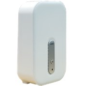The YOLI Sleep Monitor uses a Wi-Fi signal (radar) for monitoring and recording respiratory rate without requiring any interaction with the device. It can sense body movement up to 3 meters from the device and can detect different sleep conditions, such as sleep apnoea.
How does this device look?
The YOLI is a small white box (Figure 1) that must be connected to Wi-Fi using a separate mobile application and should be placed next to your bed at waist height, such as on a bedside cabinet (Figure 2). The device has a power button on the front that can be used for turning it off when not in use, i.e. not sleeping. The YOLI has a yellow-green light on the side that shows Wi-Fi connectivity, which will always be on when the device is working correctly, or slowly flashing when it does not have a working internet connection.
| 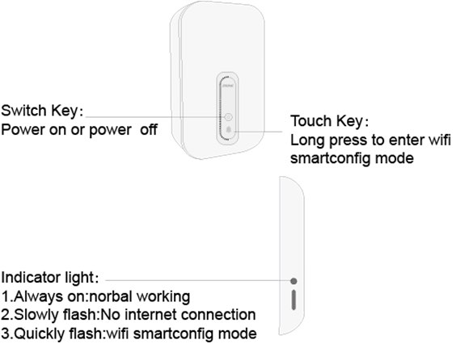 | 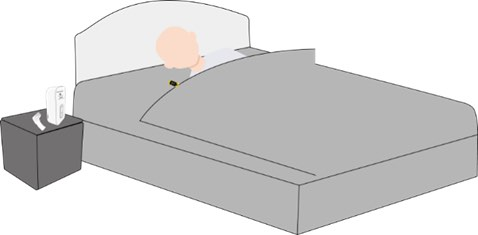 |
| Figure 1: Power button is on the front of the device and a long press can be used to configure Wi-Fi. | Figure 2: The device should be placed at waist height in your bedroom for monitoring sleep. |
What does it record?
The YOLI automatically records respiration rate of nearby people every minute during the night.
How is it used?
The YOLI should be placed near your bed, ideally on a bedside table and at waist height (Figure 2). Once it is connected to a power source and added to your home Wi-Fi, or to a Wi-Fi hotspot provided by the study phone (if no home Wi-Fi is available), it will automatically begin monitoring your sleep health. Before you go to sleep, please make sure to use the switch on the front of the device (Figure 1) to turn it on and make sure the indicator light is on and not flashing. When you wake up and start your day, please turn the device off during the day to conserve energy and data bandwidth.
Data transfer protocol for patients
As a patient: do I need to do anything on a daily basis or all N days?
Yes. You should manually connect the YOLI mobile application to your home WiFi and ensure that the YOLI device is turned on during the agreed monitoring periods and placed close to your bed. The YOLI device will automatically record your heart rate and breathing rate when turned on. Guidance for how to connect to WiFi are described below.
As a patient: do I need to do anything after each individual period of device / app use ended?
Yes. Outside of the agreed monitoring period please turn the YOLI device off by using the power button on the front of the device.
As a patient: do I need to do anything after my full periods of use of a specific device / app ends?
Yes. Please turn off the device when not being used.
Data transfer protocol for professionals
As a professional: do I need to do anything on a daily basis or all N days (for each patient using a specific device / app)?
Yes. On the first day of providing the participant with the device you should log into the YOLI website and associate the device with a participant. This will allow you to use the website to check that the data is recorded successfully across the duration of the study.
Please log in to the YOLI website using the site credential on the encrypted password vault as described in the computer setup documentation. Once logged in, you need to add the device as a “bed” and associate it with a participant ID through the website. Please use the participant ID and device id when adding a new bed, for example P-ABC, and ZK1-Q2PNDF:
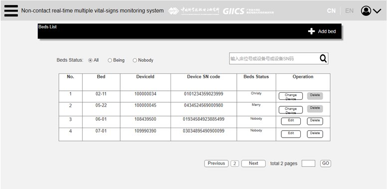
You can view the list of devices (”beds”). Tap ”Add bed” to add a new device:
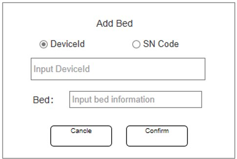
Enter the device ID (e.g. ZK1-Q2PNDF) and the participant’s ID for the bed. The device is associated with bed while you add the bed on the system. When a patient is booked into the bed, the system automatically associates the patient to the device.
Once a device is added, you can then add a note to remind you which participant each device is associated with:
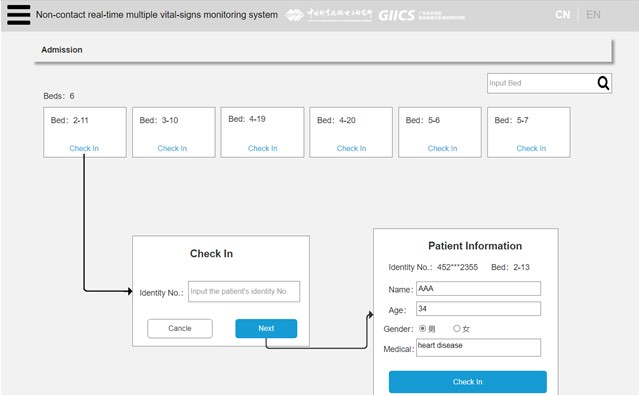
The home screen will list each bed as a device used by a participant, when you add a bed to the system and register the participant in the corresponding bed. Data is displayed in the real-time, and you can log into the YOLI website and verify that each device has been used by participant at any time.
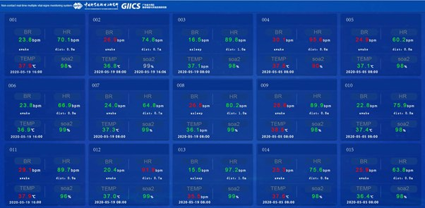
If you want to see the record of the monitoring data, you can check through “Today Data” or ”Historical Data”. And you can click the button of “Export Data” to download the physiological data.
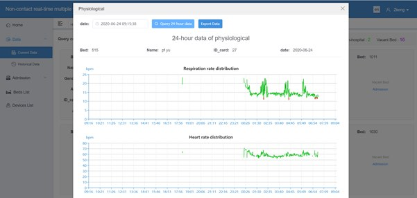
Note: If these fields are empty, then the participant has not setup the device correctly and please contact them as soon as possible.
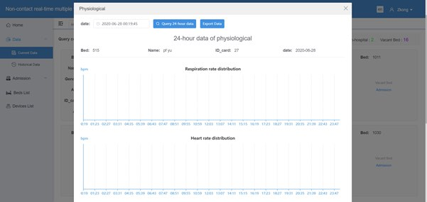
As a professional: do I need to do anything after each individual period of device / app use ended (for each patient using a specific device / app)?
Yes. You should change the status of the participant through the YOLI website from “active” to “discharged” as illustrated below:
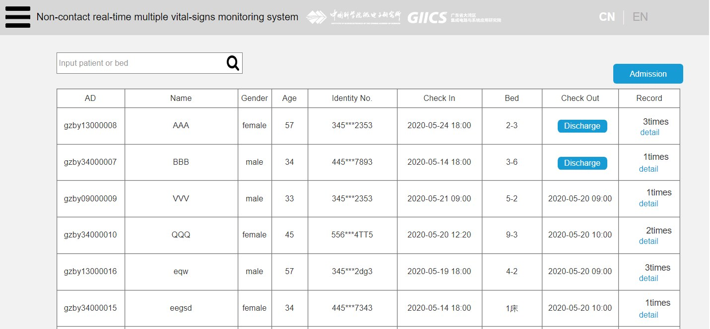
As a professional: do I need to do anything after the full periods of use of a specific device / app ends (for each patient using a specific device / app)?
Yes. As noted above, data recorded for each device across the study period can be downloaded through the YOLO website using the “export data” function. Login credentials can be accessed from within the encrypted vault as described in the computer setup documentation.
Original device setup and pairing
If handling a device and it arrives new: what needs doing before it gets sent to a study centre?
Put into inventory management?
Update device inventory to verify that you have received the device. Please navigate to https://inventory.ideafast.eu and follow the steps for registering a new device, e.g. input the current location, provider device ID and the IDEA-FAST device ID (from the ID sticker). If the device is not yet equipped with an IDEA-FAST device ID sticker, please attach a new ID sticker from your sticker supply to the back of the YOLI device. Please do not forget to enter this ID in the inventory management system accordingly.
Needs firmware update?
Not applicable.
Pairing with a companion application?
Data is stored on YOLI device and transferred to the cloud when connected to Wi-Fi. Therefore, initial pairing is required in the original setup.
Any account setup required?
No account setup is required as the YOLI will automatically connect to the associated mobile application. However, initial setup is required to connect the YOLI device to the home Wi-Fi network. Turn on the YOLI device, then long press the touch key which is on the front of the device until the light on the side is quickly flashing. The light is quickly flash when the device is waiting to configure the Wi-Fi. Once the Wi-Fi tool application is open, you will see screenshot as below. You should then connect the YOLI device to your home Wi-Fi using the associated YOLI application on the Samsung A40 smartphone.
Needs pairing with hub device?
Yes. The YOLI application will come pre-installed on the provided Samsung A40 smartphone and needs to be used to link the YOLI device to a Wi-Fi internet connection.
Any assembly required?
Not applicable.
Package together with which other devices for which study centre?
Not applicable.
If handling an application: what needs doing before a study centre can use the app?
Do we need to get accounts from the application provider?
Not applicable.
Can the software be downloaded, or do we need to make it available?
Not applicable.
Does it need to be installed on the hub devices?
Not applicable.
Do we need to activate study accounts?
Not applicable.
Device pre-setup and configuration
What sort of a device / application is this, what is it for and how does it work?
YOLI is a sleep monitor that uses millimetre wave biological radar technology to monitor respiratory rate in real-time from participants in a non-intrusive wave.

Functions of the Sleep Monitor:
|
Non-contact Installed on the wall or placed on the bedside table. |
Sleep Apnea syndrome Monitoring Apnea accident and analysing AHI. It tells you the potential sleep health hazards. |
|
Instant physiological parameter Heart Rate, Respiratory Rate, Sleep Status, Physical Motion and Other Sign Data. |
Off-bed warning Aim at warning about abnormal vital signs and Long hours away from bed. |
|
Sleep health analysis Analysing sleep health quality through judging their deep sleep, shallow sleep, REM, waking heart rate, breathing rate, body movement and turning over were also discussed. |
Smart clock Waking up the user at the most appropriate time according to the wake-up time range selected by the user. |
|
Sleep sound Broadcast music to improve sleep. |
What has already been done in pre-setup for the device or application?
Yes. The YOLI mobile application will have been installed on the provided device hub (Samsung A40) and logged in using a pre-created account.
What will need to be done before a patient can start using this?
Any account setup required?
Not applicable.
Needs pairing with hub-device?
Not applicable.
Any configuration / assembly required?
Yes. The participant must use the YOLI app on the device hub smartphone to connect to device to their home Wi-Fi, or if a home WiFi is not available - to the WiFi hotspot provided by the study phone.
Device How To setup
What sort of a device / application is this, what is it for and how does it work?
What will I need to do before I can start using this?
You will need to power on the YOLI device and connect it to Wi-Fi on its first us. The device needs to be plugged in to its associated 12V power supply as outlined below:
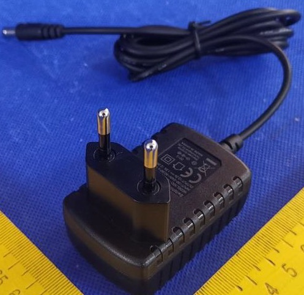
Any account setup required?
No. The YOLI application will come pre-installed on the provided Samsung A40 smartphone.
Connecting to Wi-Fi (first use only)
Turn on the YOLI device, then long press the touch key which is on the front of the device until the light on the side is quickly flashing. The light is quickly flash when the device is waiting to configure the Wi-Fi. Once the Wi-Fi tool application is open, you will see screenshot as below. You should then connect the YOLI device to your home Wi-Fi using the associated YOLI application on the Samsun A40 smartphone. Tap the icon on the home screen to open the mobile application:
Once open, the home screen will show YOLO Wi-Fi configuration user interface where you need to enter the name and password of your home WiFi. This is required for YOLI to automatically upload data. If you are unsure what your home WiFi SSID (name) and password are, these are typically written on the back of your router that provides Internet to your home.
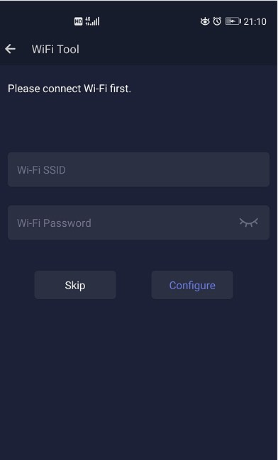
If you do not have a home Wi-Fi, please enable and use the provided smartphone’s Wi-Fi hotspot as described here.
If the YOLI device does not appear, please turn the YOLI on and off from the switch:

Needs pairing with hub-device?
Yes. The YOLI application will come pre-installed on the provided Samsung A40 smartphone and needs to be used to link the YOLI device to a Wi-Fi internet connection.
Any configuration / assembly required?
Not applicable.
Troubleshooting/FAQ
The device / app seems to have stopped working: what should I do?
Battery?
Not applicable. The YOLI device uses a DC charger.
Connectivity issues?
Wi-Fi is required on the YOLI device for it to record data correctly. The LED light on the side of the device will be always on to show that it is connected to Wi-Fi and will blink slowly when the device is not connected to the Wi-Fi.
Need to restart or log in again?
Not applicable.
Does the device need to be plugged in constantly?
Yes, the device need be plugged in constantly.
Which room should it go in?
When the patient sleeps on the bed or sits in the chair, the device needs to be placed as shown in Figure. 1. Note that the patient needs to keep still (without body movement), the device can monitor the patient breath in a contactless manner. The distance between the device and the human target needs to be less than 3m.
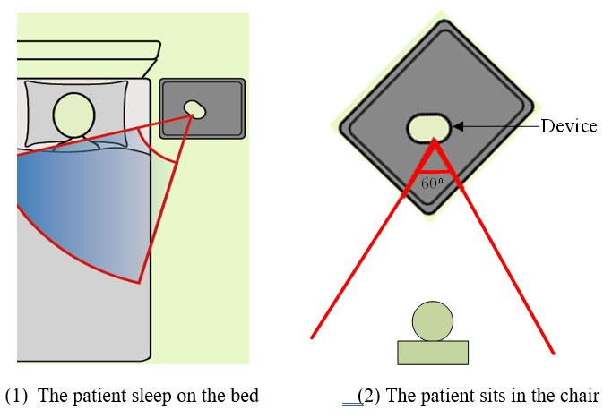
How much memory does the ZKOne device have?
It will save 24 hours data before the device restart. (if there is no network)
What quantity of data is produced for one night sleep?
The data is saved every 2 seconds with the format (e.g., timestamp, respiration rate). The quantity of data is about 500KB for one night.
Can data be manually retrieved from the ZKOne device?
No. Data can only be retrieved from the cloud server.
Does the ZKOne function correctly without a Wi-Fi connection?
No. WiFi is required for the ZKOne YOLI Sleep monitor device to function correctly.
How can I get help with using this?
If you have any other questions or concerns, please contact your local study centre:
| Newcastle, United Kingdom | Rotterdam, Netherlands | Kiel, Germany | Muenster, Germany |
| Person Name Centre Name Location |
Person Name Centre Name Location |
Person Name Centre Name Location |
Person Name Centre Name Location |
Device return
What do I do when a period of device use is over?
Turn the device off by pressing the button on the front of the YOLI device and the light on the side will also turn off.
Before the device is returned or disposed of: does any data need to be transferred?
Not applicable. The YOLI device automatically uploads data in real-time to the YOLI services where data can be downloaded as outlined above.
Do I need to return the device somewhere?
Please contact the person that provided you with it to arrange further steps. You will have to return it by post – subject to further individual arrangement.
Returned device processing and cleaning / an application use period for a participant has ended
Do I need to clean the device after each participant returns the device?
Not applicable.
What type of material can clean/sterilise the device?
Not applicable.
Trigger Data Transfer Protocols?
Not applicable. Data is recorded on the YOLI device every 2 seconds and roughly 500KB is recorded per night. Data is automatically transferred from the device YOLI’s server and the device stores 24-hours of data as a backup.
Where should the device be returned?
Prior to returning any device, please ensure all data has been transferred and successfully uploaded to the idea-fast data hub if required.
Device recycling and provisioning
How will the devices and applications be supplied to the study site?
The devices will be delivered to study site by express.